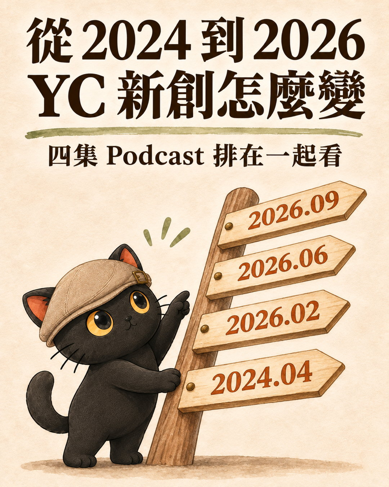
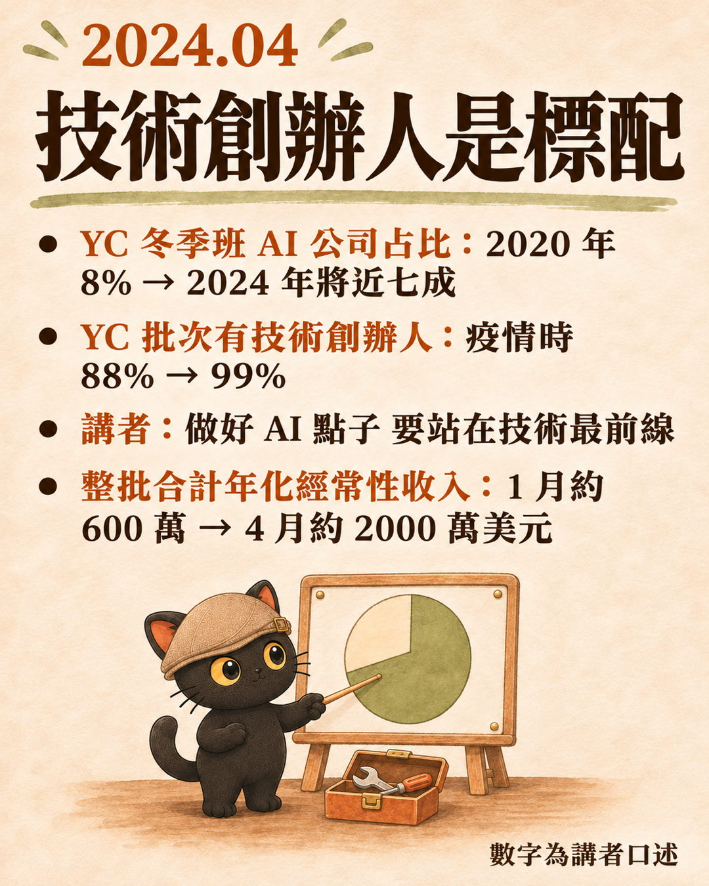
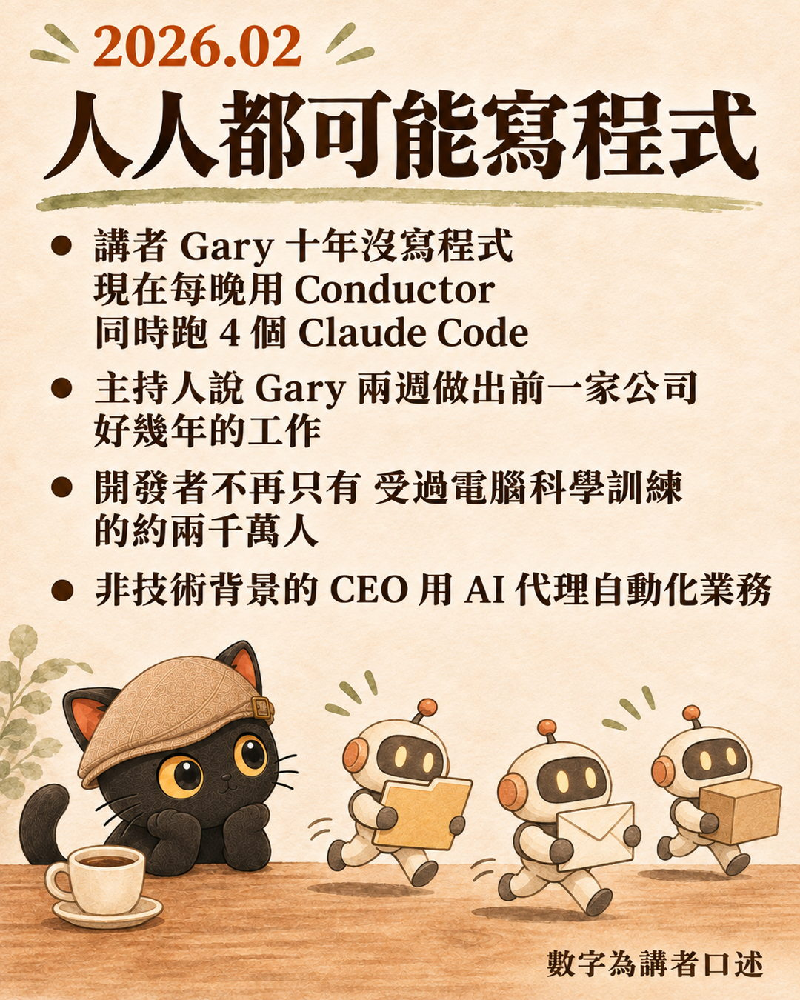
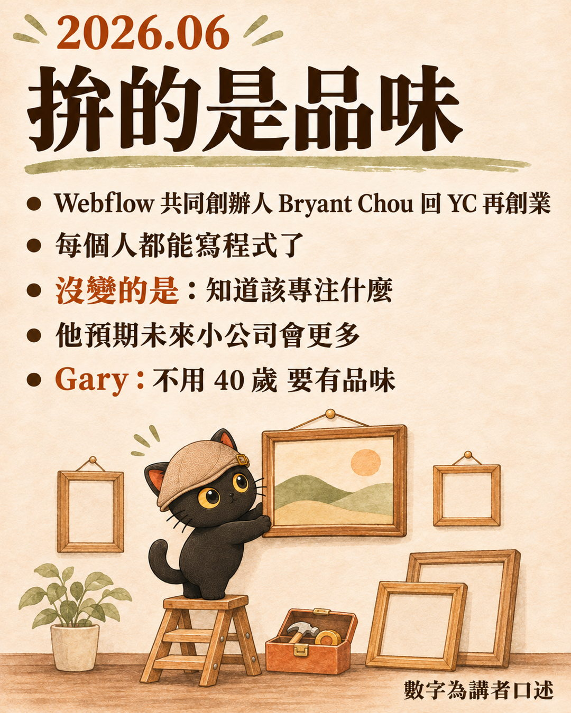
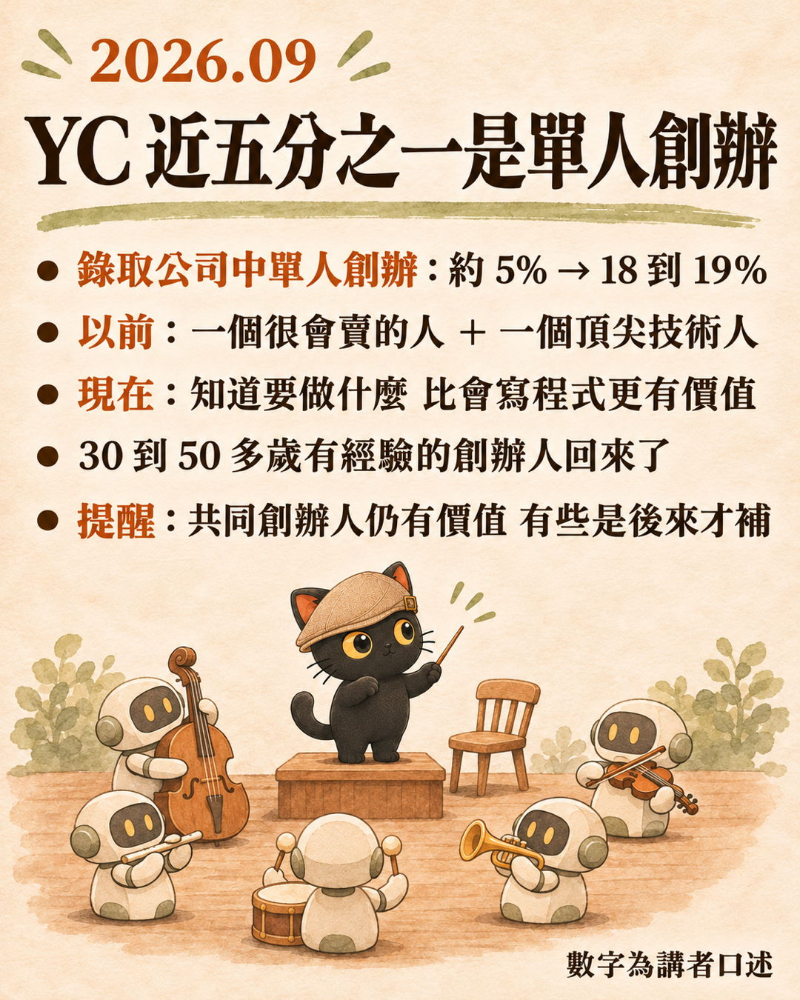

這篇在講什麼
Y Combinator（簡稱 YC，美國知名的新創加速器）合夥人有一個 Podcast 叫《Lightcone》。我把 2024 到 2026 年的四集排在一起看，發現他們談新創團隊的重點一直在移動：從「幾乎每家公司都有技術創辦人」，移到「要知道該做什麼」。
這個移動，跟我最近在企業陪跑看到的狀況很像。企業導入 AI，常卡在三件事：該把什麼交給 AI、怎麼交代、怎麼驗收。這三件事，剛好都是帶過人的主管每天在做的。
2026 年 9 月那集，講者還提出一個猜想：長年帶工程團隊的人，管 AI 程式代理特別上手。我把這個猜想延伸到企業：AI 導入的人選，或許不必只看誰最懂數位工具。
- 正在評估 AI 導入、不確定該讓誰來負責的經營者或主管
- 負責流程優化、工具導入的營運或 IT 角色
- 想讓團隊一起用 AI、不只自己會用的決策者
- 幫企業導入 AI 的顧問、講師
- 想用 AI 開一人公司、想知道現在創業團隊長什麼樣子的人
- YC 四集 Podcast 從 2024 到 2026，新創團隊組成怎麼變
- 每一集對企業的意思，以及我在陪跑現場看到的呼應
- 帶新人和帶 AI 員工的對照
- 公司導入 AI 要找誰負責，團隊可以先動的第一步
先講結論
這四集看下來，寫程式的門檻被 AI 拉低之後，留下來的難題是判斷：做什麼、怎麼交代、怎麼驗收。
這呼應我說的：訓練 AI 員工，有經驗的主管，可能比懂數位的年輕人更有優勢。
我在 9 月也寫過：導入一堆 AI 工具很容易過時，還是要從根本整理自己企業的知識庫做起，重新規劃 AI 工作流。對企業來說，與其先問「要買哪一套 AI」，不如先問「誰最清楚這條流程該做成什麼樣子」。
YC《Lightcone》四集：新創團隊的重點怎麼移動（數字為講者口述）
| 時間 | 講者提到的數字 | 這集的重點 |
|---|---|---|
| 2024 年 4 月 | 冬季班 AI 公司占比：2020 年 8%，2024 年將近七成；99% 的公司有技術創辦人 | 團隊裡幾乎都有會寫程式的人 |
| 2026 年 2 月 | 原本約兩千萬名受過電腦科學訓練的開發者，現在可能擴及數億人 | 任何人都可能是開發者 |
| 2026 年 6 月 | （本列以觀點為主，未列統計數字） | 每個人都能寫程式了，沒變的是知道要做什麼；不用 40 歲，要有品味 |
| 2026 年 9 月 | YC 錄取的公司裡，單人創辦從約 5% 變成約 18 到 19% | 知道要做什麼比有個 CTO 會寫程式更有價值；共同創辦人仍有價值，有些是後來才補 |
2024 年 4 月：技術創辦人幾乎是標配
講者說，YC 冬季班裡做 AI 題材的公司，從 2020 年的 8%，到 2024 年將近七成，大約 170 家。同一集也提到，這一期全部公司中，99% 有技術創辦人，疫情期間是 88%，講者說這是技術背景最強的一期。
那時候的邏輯是：要做好 AI 題材，得站在技術最前沿，團隊裡要有人真的懂 AI 技術和工具。
同一集還有一句話，對企業特別值得注意。講者說，這些 AI 產品除了搶既有的軟體預算，很多工作是在取代人力，所以也打開了人力預算。
對企業的意思
AI 產品開始被當成「做事的人」來賣。我常說，導入 AI 不像買一台新機器，插上電就能用，比較像在帶一位新同事。
我在陪跑看到的呼應
我之前寫過，很多公司導入 AI 會依序做三件事：買好工具、開好帳號、請人來上課，做完就覺得導入完成了。我的看法剛好相反，這三件做完，才開始真正的工作。導入 AI 比較像在帶一位新同事，工具買完那天才開始養。
既然 AI 被當成人力來賣，就要用帶人的方式去帶它。
- 企業導入 AI 為什麼這麼難？ 這段陪跑觀察的完整版
2026 年 2 月：AI 代理開始自己挑工具
這一集的主題是「代理經濟」。講者說，過去受過電腦科學訓練的開發者大約兩千萬人，現在任何人都可能是開發者，可能到數億人，再加上每個人背後的 AI 代理。
講者觀察到，AI 代理開始自己挑工具。他們舉了幾個例子：
- 講者轉述朋友的觀察，過去一年新建的 PostgreSQL 資料庫數量暴增，AI 代理常把 Supabase 當預設選擇，原因之一是它的文件被認為寫得最好。
- 寄信服務 Resend 的創辦人發現，ChatGPT 成了前三大客戶來源，之後把文件改成對 AI 代理友善的寫法：問答式標題、條列答案、附程式碼片段。
- 講者說，文件會成為 AI 代理推薦工具的入口，文件改善一點點，對業績的影響可能很大。
對企業的意思
這集講的是開發工具，但道理可以搬到企業內部：AI 做得好不好，很大一部分看它讀到的資料寫得清不清楚。公司內部的資料、流程說明、範例，是寫給人看的，AI 不一定讀得懂。
我在陪跑看到的呼應
一位陪跑學員常用 AI 做簡報，要從自己的圖庫挑照片。每次都讓 AI 去看圖片，很耗 Token（AI 處理與計費的單位），也很慢。我們的做法是讓 AI 把每張圖片辨識一次，把用途直接寫進檔名：這張是封面用、這張是結尾用。之後 AI 只要讀檔名就能配圖。
資料整理就是這麼具體的事：把 AI 每次都要重新弄懂的東西，整理成它一讀就懂的樣子。
2026 年 6 月：不用 40 歲，要有品味
這集的來賓是 Webflow 共同創辦人，他回到 YC 用 AI 再創業。他在 Webflow 從技術長做起，後來也帶過行銷和銷售團隊，現在把這些經驗做進新產品裡。
他說，現在程式寫得更多、測試也更完整，但「該專注什麼、怎麼把產品塑形」沒有變，這一點仍然是有經驗的人的優勢。
他也分享自己公司內部怎麼用 AI：每一通客戶電話都轉成文字、存進客戶管理系統，提案自動起草，跟進信自動排程。他說這樣不但做得更多，也多出空間思考。
同一集裡，講者拿「訓練人」和「用 AI」做了比較。以前招了人，要想怎麼訓練他們、要給他們哪些東西、給他們幾週時間，再做一次檢查點，看有沒有做到要的。接著講者以程式開發為例，說 AI 把過去要花一週、一個月甚至一年的開發工作，縮短到幾分鐘、幾小時到幾天。
這集的標題是「40 歲單人創辦人的時代來了」，講者自己補了一句：不用 40 歲，要有品味。
來賓也提醒了另一面：資深的人有時會被經驗綁住，要多一點冒險的膽量。
對企業的意思
AI 讓「做出來」變快了，但「該做什麼、做成什麼樣子才對」還是要靠人判斷。這個判斷力，多半在已經帶過團隊、看過很多次成敗的主管身上。
我在陪跑看到的呼應
我遇過一個單位，老闆一決定導入，就拉一群年輕同仁和各部門主管一起來學，結果自然沒有用，因為大家都很忙，自己的事都做不完。
我的建議是先找最需要優化的主管，把一條工作流程做好，讓同仁覺得「我用 AI 就立刻解決我原本的東西了」，大家才會覺得 AI 有用，才會去用。
主管知道這條流程哪裡最痛、做成什麼樣子才算對。我把這種流程判斷，看成企業場景裡的一種品味。
- 公司請 AI 顧問來陪跑，要叫全部人一起來學嗎？ 先找關鍵主管把一條流程做好，再複製給其他人
2026 年 9 月：單人創辦變多，共同創辦人仍有價值
講者說，YC 錄取的公司裡，單人創辦的比例從過去約 5%，變成約 18 到 19%，接近五分之一，是他們看過最高的一次。
講者的解釋是：以前創業要會說服人，又要會寫程式，所以常需要共同創辦人互補。現在知道要下什麼提示、知道要做什麼，比有個技術長（CTO）會寫程式更難，也更有價值。
但講者也說，整體來看共同創辦人還是有價值。他們舉的幾個成功案例，都是先做起來、有了成績，之後才補上共同創辦人。
這集還有兩個對企業很有參考價值的觀察：
- 繞過幾圈的人特別有力量。講者說，有經驗的人知道坑在哪裡，有品味，這些人現在特別強。過去「一定要有共同創辦人」「要有一群很酷的投資人」這類門檻越來越不重要，更重要的是知道要做什麼。
- AI 開始把整件事做完。講者說，YC 錄取的公司中，做「由 AI 代理把一整件工作從頭做到完」這類產品的公司，占比從約 10% 升到超過 25%，例子包括保險經紀、醫療收案、醫療帳務。他們也舉了一個 AI 招募工具，從搜尋人選延伸到聯絡、排面試，講者說招募人員反而樂見這些重複的聯絡工作被接手，可以專心在文化適配和人的判斷上。
對企業的意思
AI 接手的範圍從單一步驟擴大到整件工作，人留下來做的，是判斷與把關。這也是主管原本就在做的事。
帶人的經驗，搬到 AI 上還用得到
2026 年 9 月那集，講者提出一個猜想：管理 AI 程式代理，某種程度跟管理人沒有那麼不同。
他說，那些長年帶工程團隊的人，上手特別快，可以一次開出一大批程式代理來管，可能比一個很聰明、但還沒有那些年經驗的 19 歲年輕人管得更好。
這讓我想起上週整理簡立峰在經濟日報科技論壇〈我眼中的AI Agent〉演講時記下的一段：他提到大型科技公司繼續聘 41 到 49 歲的人，因為他們比較知道 AI 哪裡會出錯，有能力駕馭它。
- AI 跑很快，企業跟很慢，中間的落差誰來補？ 簡立峰那場演講的整理
我在陪跑看到的呼應
有一場陪跑，我講了一句話：「你們都對 AI 太仁慈了，所以 AI 才做不到。」
太仁慈的意思是，AI 做錯了，我們自己默默改完就算了，AI 永遠不知道自己錯在哪。我教學員的做法是，自己動手改完之後，要回頭問 AI 兩個問題：你知不知道我改了哪些地方？你知不知道我為什麼要這樣改？答不出來，就直接告訴它。
就像帶實習生，你接手做完之後，要讓他看「我做的跟你做的差在哪」。這樣做一陣子，八成會變九成，九成會變九成五，到某個點就可以變全自動。
帶過人的主管，對這套流程一點都不陌生。
帶新人與帶 AI 員工（右欄是我陪跑時的做法，講者沒有這樣說）
| 動作 | 講者描述的帶人過程 | 我陪跑時帶 AI 的做法 |
|---|---|---|
| 交代與給資料 | 想清楚怎麼訓練、要給他們哪些東西 | 把資料和一份合格範例備好，告訴它做成這樣就對了 |
| 給時間 | 給幾週時間 | 先挑每天都會遇到的工作，次數夠多才有得修正 |
| 檢查點 | 做一次檢查，看有沒有做到要的 | 指定一個人持續檢查 AI 的結果 |
| 回饋 | （節目沒有細講） | 改完回頭問 AI：我改了哪裡、為什麼這樣改 |
| 留下規則 | （節目沒有細講） | 把修正整理成規則，放在 AI 下次讀得到的地方 |
另外，最近幫一個農業團隊盤點流程，對方補了一份 73 步的流程文件，看起來已經很完整。拿去跟會談逐字稿一對，會中談最久的三條工作線，一條都沒有畫進去。這些沒畫進去的，很可能就是員工知道怎麼做、卻從來沒寫下來的經驗。AI 讀不到你腦袋裡的東西，要有人把它問出來、整理成 AI 能照著做的知識。
這呼應我說的：訓練 AI 員工，有經驗的主管，可能比懂數位的年輕人更有優勢。
公司導入 AI 要找誰負責？團隊可以先動的三步
如果這週就想開始，我會建議三步：
- 先挑一件每天都會遇到的工作。每天都會做，才有足夠的次數讓 AI 被修正。一個月才做一次的事，養很久都養不起來。
- 把需要的資料和合格範例備好。資料是 AI 做事的材料，合格範例就是過去做得好的一份成品，告訴它「做成這樣就對了」。只給資料不給範例，AI 只能自己猜標準。
- 指定一個人持續檢查結果。這個人負責看 AI 做出來的東西，錯了就回饋，改好的就留成規則。
第三步的那個人，我會優先找熟悉這條流程、帶過新人的主管。做到同事真的願意每天用，再往下一件擴。

脆文版的五張圖卡
這個主題最早是一則 Threads 脆文，配了五張圖卡，可以搭配看。




要先講清楚的地方
- 文中 YC 的數字都是講者在節目裡口述的，我沒有另外查證。
- 講者猜想的是：長年管理工程團隊的人，可能更擅長管理大量 AI 程式代理。延伸到一般企業主管與其他 AI 工作，是本文的觀點，節目並沒有驗證這個結論。
- 單人創辦變多，但講者同時也說，共同創辦人還是有價值。
- 有經驗也有限制，節目來賓自己就提醒，資深的人有時會被經驗綁住。
- 陪跑案例都經過去識別化，只保留跟這篇有關的部分。
來源
Y Combinator《Lightcone》Podcast，日期為 YouTube 上傳日：
- 2024-04-25 Consumer is back, What's getting funded now, The vibes immaculate
- 2026-02-21 The AI Agent Economy Is Here
- 2026-06-19 The Age Of The 40-Year-Old Solo Founder Is Here
- 2026-09-17 The State of Startups in 2026
脆文版：https://www.threads.com/@jiang_yude_coach/post/DflfDaJkj7t
- 企業導入 AI 為什麼這麼難？：買了工具同事都沒在用，AI 要從一件每天做的事開始養，是本文 2024 年那段陪跑觀察的完整版
- 公司請 AI 顧問來陪跑，要叫全部人一起來學嗎？：先找關鍵主管把一條流程做好，再複製給其他人，對應本文「先找最需要優化的主管」那段
- AI 跑很快，企業跟很慢，中間的落差誰來補？：簡立峰談 AI Agent 五大變革，本文引用的「大型科技公司繼續聘 41 到 49 歲的人」出自這場演講
- 用你已經有的管理知識來管理 AI，以豐田 TPS 為例：往後一步，把管人、管流程、管品質的管理知識翻成管 AI 的方法，附一張檢查表
- 公司導入 AI，資料要先整理到什麼程度？：往後一步，2026 國泰金控技術年會 9 場演講整理，講企業資料要替 AI 補上哪些說明、比照員工制度設計數位同事
想一起把 AI 接進工作流程？
我每個月有兩場免費線上講座，也在 LINE 社群分享一人公司 ＋ AI 員工的應用技巧。